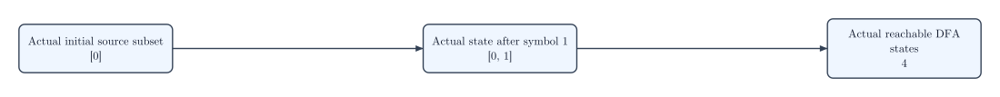
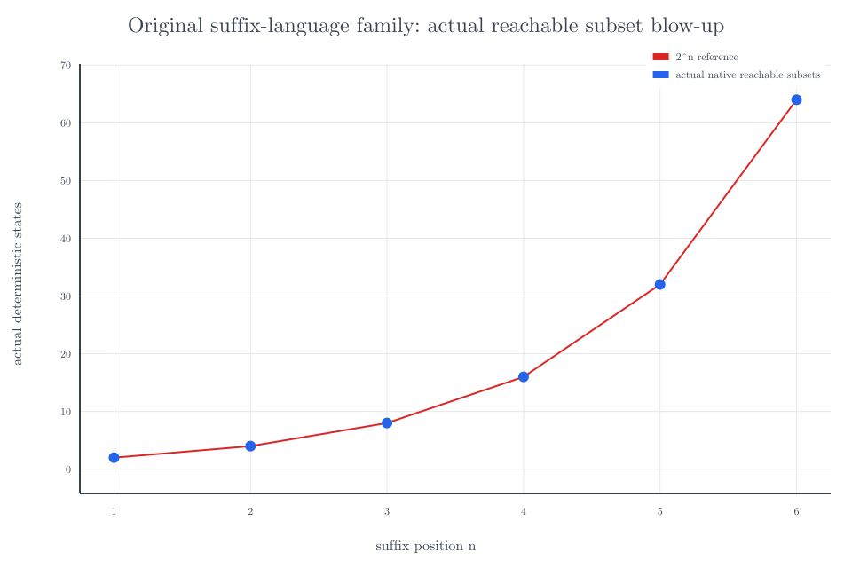
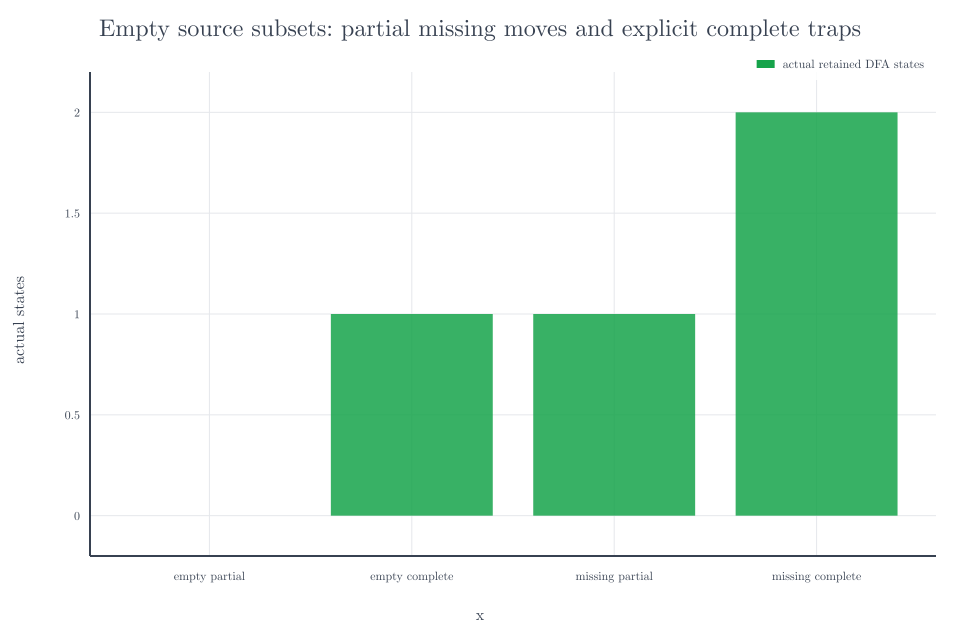
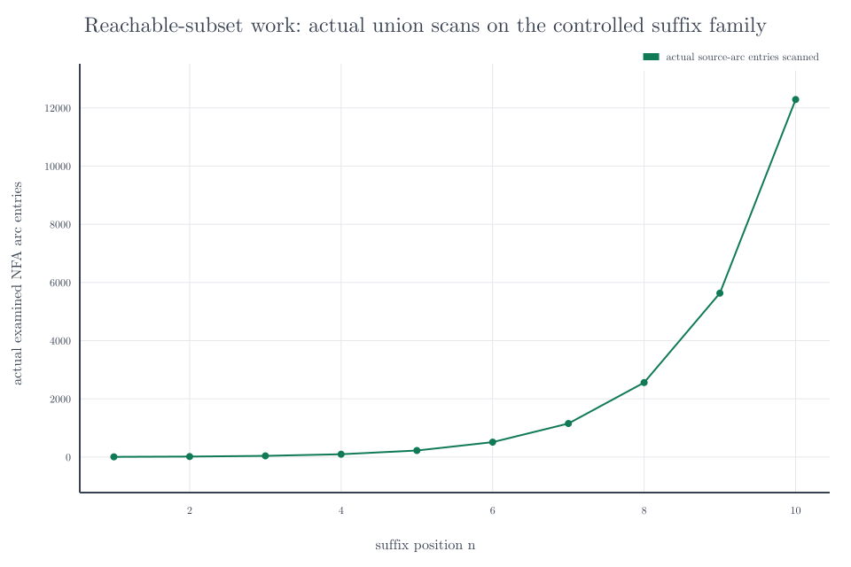

Powerset construction: actual reachable subsets and missing moves
Abstract
A DFA state is the actual set of NFA states reachable after a word. The existing validated native determinizer already retains these source subsets in discovery order; this conversion uses that provenance directly. The original suffix-language NFA generator now lives in the core. It accepts binary words whose nth symbol from the end is1, providing a precise controlled family with an exponential number of reachable deterministic states.
Mechanism and mathematical scope
A tiny actual producing history
The table and native concept diagram read the same producing execution. Every block below is a complete editable C++ program.
#include <dm/dm.hpp>
int main() {
namespace a = dm::algorithms;
namespace g = dm::graphics;
std::filesystem::create_directories("build");
auto n = a::nth_from_end_nfa(2);
auto t = a::powerset_construction_trace(n, false, 16);
std::print("\n| actual DFA id | actual NFA subset | transition0 | transition1 | accepting |\n| ---: | " "--- | ---: | ---: | --- |\n");
for (int i = 0; i < t.dfa.num_states; ++i)
std::print("| {} | `{}` | {} | {} | {} |\n", i, t.subsets[i],
t.dfa.delta[i][0], t.dfa.delta[i][1], t.dfa.accept[i] != 0);
g::Diagram d;
d.node("n0", {0, 0},
std::format("Actual initial source subset\n{}",
t.subsets[t.dfa.start]));
d.node("n1", {10, 0},
std::format("Actual state after symbol 1\n{}",
t.subsets[t.dfa.delta[t.dfa.start][1]]));
d.node("n2", {20, 0},
std::format("Actual reachable DFA states\n{}", t.dfa.num_states));
d.edge("n0", "n1").edge("n1", "n2");
d.save_svg("build/powerset_construction_tiny.svg");
}| actual DFA id | actual NFA subset | transition0 | transition1 | accepting |
|---|---|---|---|---|
| 0 | [0] | 0 | 1 | false |
| 1 | [0, 1] | 2 | 3 | false |
| 2 | [0, 2] | 0 | 1 | true |
| 3 | [0, 1, 2] | 2 | 3 | true |

The retained original experiment
#include <dm/dm.hpp>
int main() {
namespace a = dm::algorithms;
namespace g = dm::graphics;
std::filesystem::create_directories("build");
auto d = a::powerset_construction_trace(a::nth_from_end_nfa(2), false, 16);
std::print("Original n2 words:01={},10={},110={}.\n",
a::dfa_accepts(d.dfa, {0, 1}), a::dfa_accepts(d.dfa, {1, 0}),
a::dfa_accepts(d.dfa, {1, 1, 0}));
std::vector<double> x, y, reference;
std::print("\n| suffix position n | native NFA states | actual DFA states | mathematical2^n reference " "|\n| ---: | ---: | ---: | ---: |\n");
for (int n = 1; n <= 6; ++n) {
auto source = a::nth_from_end_nfa(n);
auto t = a::powerset_construction_trace(source, false, 128);
x.push_back(n);
y.push_back(t.dfa.num_states);
reference.push_back(std::ldexp(1., n));
std::print("| {} | {} | {} | {} |\n", n, source.num_states,
t.dfa.num_states, std::ldexp(1., n));
}
auto p = g::RPlot::create();
p.lines(x, reference, "2^n reference", {220, 38, 38}).points(
x, y, "actual native reachable subsets", {37, 99, 235}, 6).title(
"Original suffix-language family: actual reachable subset blow-up").x_label("suffix position n").y_label("actual deterministic states");
p.save_svg("build/powerset_construction_original.svg");
}Original n2 words:01=false,10=true,110=true.
| suffix position n | native NFA states | actual DFA states | mathematical2^n reference |
|---|---|---|---|
| 1 | 2 | 2 | 2 |
| 2 | 3 | 4 | 4 |
| 3 | 4 | 8 | 8 |
| 4 | 5 | 16 | 16 |
| 5 | 6 | 32 | 32 |
| 6 | 7 | 64 | 64 |

Explicit controls
#include <dm/dm.hpp>
int main() {
namespace a = dm::algorithms;
namespace g = dm::graphics;
std::filesystem::create_directories("build");
a::NFA empty{0, 1, {}, {}, {}};
a::NFA missing{1, 1, {{{}}}, {0}, {1}};
std::vector<std::string> labels{"empty partial", "empty complete",
"missing partial", "missing complete"};
std::vector<double> counts;
std::print("\n| policy fixture | actual states | actual start id | actual unions |\n| --- | ---: | ---: " "| ---: |\n");
for (int i = 0; i < 4; ++i) {
auto t =
a::powerset_construction_trace(i < 2 ? empty : missing, i % 2, 8);
counts.push_back(t.dfa.num_states);
std::print("| {} | {} | {} | {} |\n", labels[i], t.dfa.num_states,
t.dfa.start, t.transition_unions);
}
bool capped = false, bad = false;
try {
a::powerset_construction_trace(a::nth_from_end_nfa(8), false, 32);
} catch (const std::runtime_error &) {
capped = true;
}
try {
auto n = missing;
n.delta[0][0] = {2};
a::powerset_construction_trace(n);
} catch (const std::invalid_argument &) {
bad = true;
}
std::print("Output-state cap checked: {}; complete invalid-target guard: {}.\n",
capped, bad);
auto p = g::RPlot::barplot(counts, labels, "actual retained DFA states");
p.title("Empty source subsets: partial missing moves and explicit complete traps").y_label("actual states");
p.save_svg("build/powerset_construction_controls.svg");
}| policy fixture | actual states | actual start id | actual unions |
|---|---|---|---|
| empty partial | 0 | -1 | 0 |
| empty complete | 1 | 0 | 1 |
| missing partial | 1 | 0 | 1 |
| missing complete | 2 | 0 | 2 |
Output-state cap checked: true; complete invalid-target guard: true.

Actual selected work and sensitivity
#include <dm/dm.hpp>
int main() {
namespace a = dm::algorithms;
namespace g = dm::graphics;
std::filesystem::create_directories("build");
std::vector<double> x, y;
std::print("\n| suffix position | actual subsets | actual state/symbol unions | actual NFA arcs " "examined | actual maximum subset size |\n| ---: | ---: | ---: | ---: | ---: |\n");
for (int n = 1; n <= 10; ++n) {
auto t =
a::powerset_construction_trace(a::nth_from_end_nfa(n), false, 4096);
x.push_back(n);
y.push_back(t.nfa_arcs_examined);
std::print("| {} | {} | {} | {} | {} |\n", n, t.dfa.num_states,
t.transition_unions, t.nfa_arcs_examined, t.max_subset_size);
}
auto p = g::RPlot::create();
p.lines(x, y, "actual source-arc entries scanned", {16, 122, 87}).points(
x, y, {16, 122, 87}, 4).title("Reachable-subset work: actual union scans on the controlled suffix family").x_label("suffix position n").y_label("actual examined NFA arc entries");
p.save_svg("build/powerset_construction_work.svg");
}| suffix position | actual subsets | actual state/symbol unions | actual NFA arcs examined | actual maximum subset size |
|---|---|---|---|---|
| 1 | 2 | 4 | 6 | 2 |
| 2 | 4 | 8 | 16 | 3 |
| 3 | 8 | 16 | 40 | 4 |
| 4 | 16 | 32 | 96 | 5 |
| 5 | 32 | 64 | 224 | 6 |
| 6 | 64 | 128 | 512 | 7 |
| 7 | 128 | 256 | 1152 | 8 |
| 8 | 256 | 512 | 2560 | 9 |
| 9 | 512 | 1024 | 5632 | 10 |
| 10 | 1024 | 2048 | 12288 | 11 |

API and interpretation
The machine is epsilon-free: this API does not perform epsilon closure. Partial mode records missing moves as-1 and omits an empty initial subset; complete mode retains a rejecting empty trap. Numbering is native discovery order, not arbitrary subset-bit order. The optional output-state cap bounds created subsets, not every union temporary or peak RAM. The2^n curve is a mathematical reference for this family, not an observed count copied into results.
Reusable producers, fixtures and histories live in the canonical C++ library. Captured records own their values and do not come from a separate report replay. Selected counters and record/scalar policies are specified at their API boundaries; they are not peak-byte or wall-time budgets. Synthetic structural inputs are controlled fixtures for these mechanisms.
References
Verified in the shared ten-document batch: 106 algorithm CTest cases plus90 graphics cases;21 directly instrumented algorithm ASan/UBSan cases and renderer SVG/PNG sanitizer probe;119 executable public examples;587/587 scoped definitions plus9 changed legend definitions;10 hovers;56287 independent records/278204 checks;frozen compatibility for all ten algorithm families;13 checkout/installed standalone headers and linked consumer;40 executed programs/40 reviewed figures with both exports. The legacy source is retired only after these gates pass.